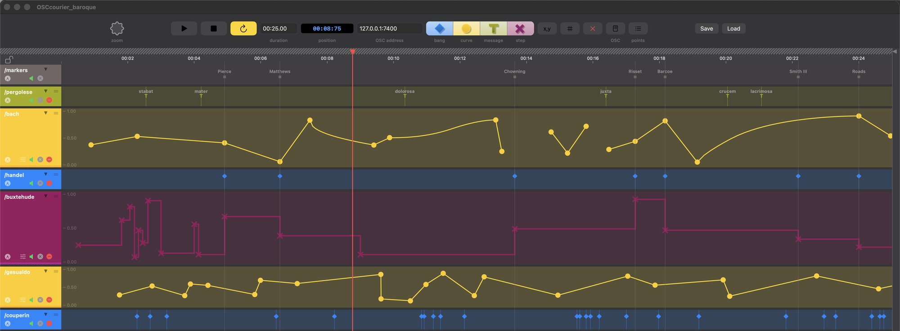
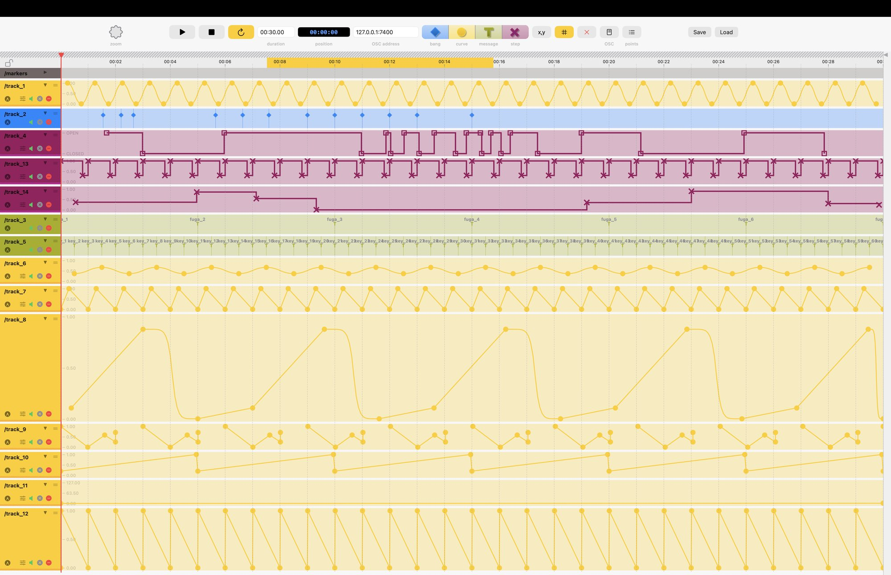
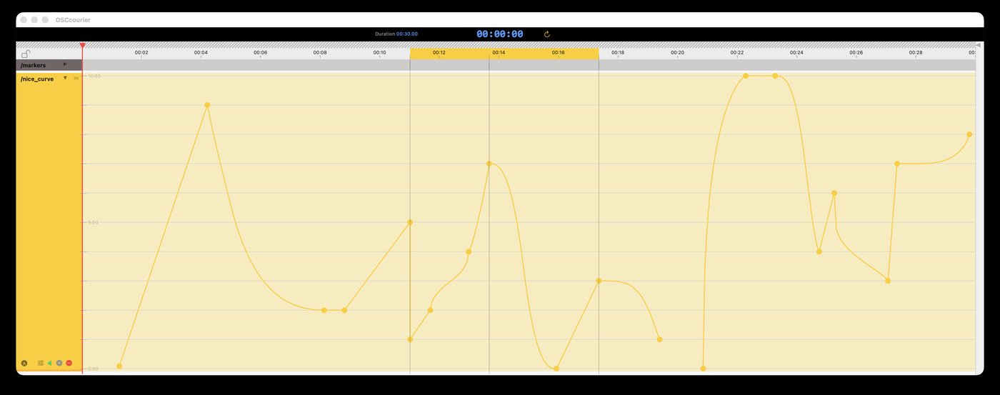
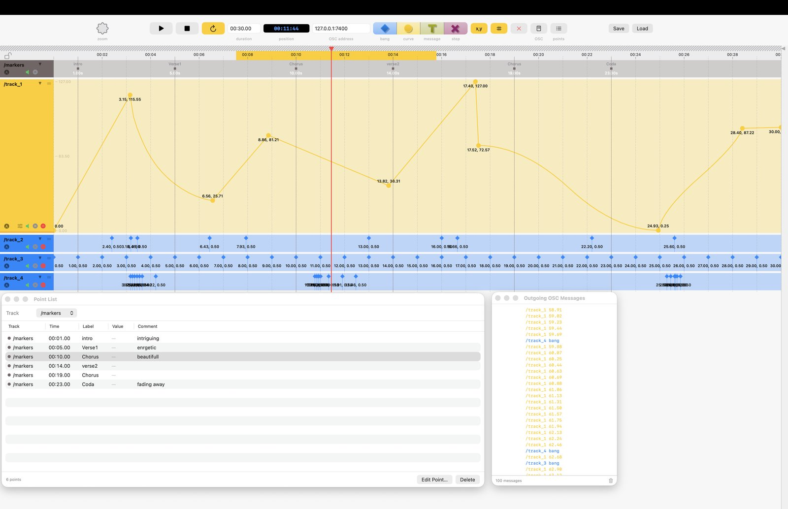

A timeline for your OSC messages — a kind of score. Lightweight and elegant, with a familiar, intuitive DAW-style workflow. Works great with Max/MSP and any OSC-compatible app.
Free to use · Tested on macOS 26 Tahoe, may work down to macOS Sonoma (untested)

OSCcourier does exactly — and only — what it was designed for: sending OSC messages, precisely and without friction.
Linear, S-curve and bulge interpolation for expressive automations.
Sends messages live, and can be remotely controlled — play, pause, goto, loop — from Max/MSP or any OSC-capable app.
Define a loop region and snap points to an adjustable time grid.
Run several independent sequences at once, each with its own OSC address and auto-incrementing port.
Populate tracks with periodic patterns automatically.
Review every point at a glance, filter by track, and attach comments.
Sequences saved as readable JSON — easy to version, diff, or script against.
Smooth, interpolated automations
Discrete, step-by-step values or gates
Custom OSC messages
One-shot triggers
Dedicated reference track for snap-to guides
From a single automation curve to a dense, many-track project — the same clear workflow throughout.



OSCcourier was built in Swift for a native, well-integrated, polished feel on macOS. The goal: something lightweight and elegant, with a familiar DAW-style workflow, so nobody feels lost or disarmed by a long learning curve.
OSCcourier emits standard OSC messages, so it should work with any application able to receive them — Max/MSP included, which is what it was originally built for.
Sequences are saved as JSON, readable and easy to version.
Download the latest release from GitHub.
↓ Download OSCcourier